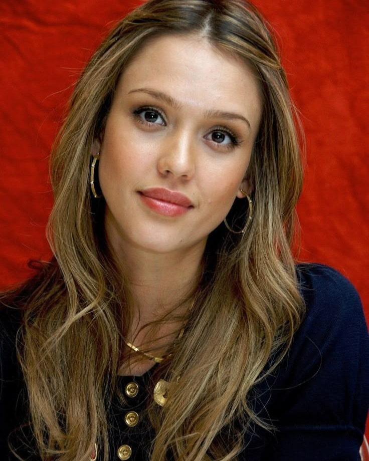
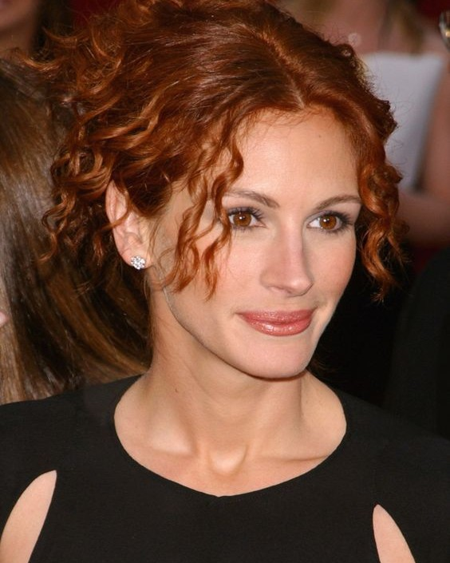
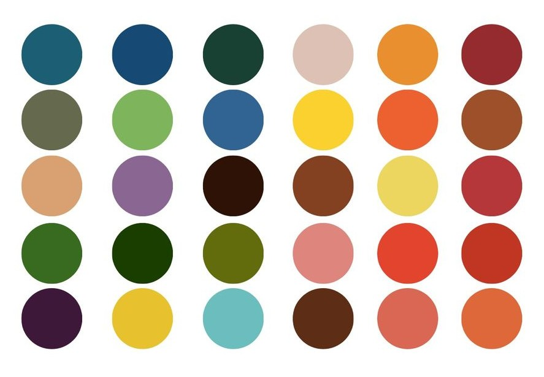
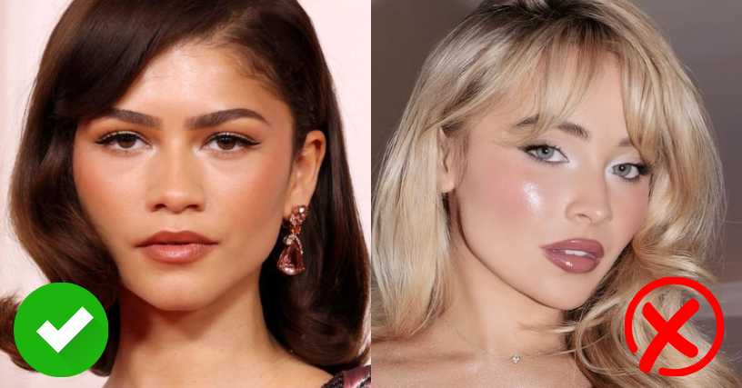
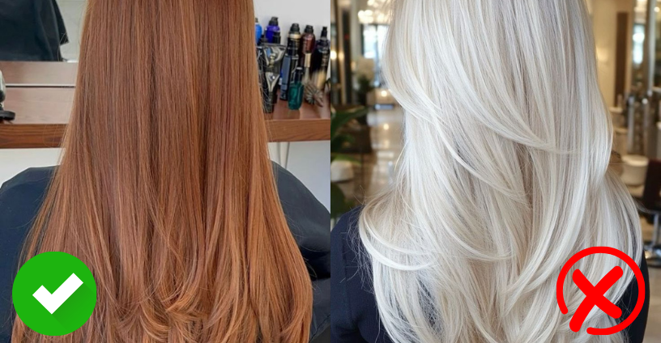
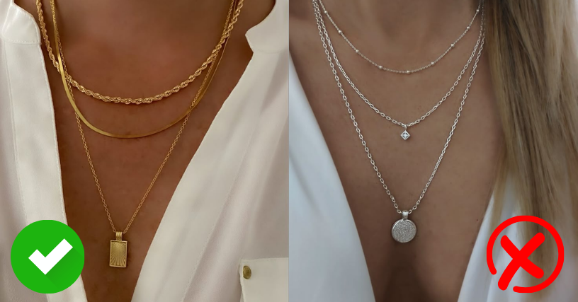

Características generales de la estación Otoño
- Subtono de piel cálido: on matices dorados, cobrizos u oliva. La piel puede ser clara, media u oscura, pero siempre con una base cálida y terrosa.
- Cabello naturalmente cálido: castaño medio a oscuro, cobrizo, pelirrojo o rubio oscuro con reflejos dorados o rojizos.
- Ojos intensos y terrosos: avellana, verde oliva, ámbar o marrón dorado. A menudo tienen patrones irregulares o color mezclado.
- Contraste bajo o medio: hay armonía entre piel, ojos y cabello, sin grandes diferencias de valor o saturación.



Tipos de otoño
Dentro de esta estación, existen subcategorías que ayudan a afinar aún más la elección de colores.
1- Otoño cálido:
- Rasgos intensamente cálidos.
- Paleta rica en dorados, ocres y terracotas.
- Tienen una piel que se broncea fácilmente.
2- Otoño profundo:
- Colores más oscuros y dramáticos.
- Cabello castaño oscuro o negro cálido.
- Ojos profundos, piel y tonos intensos.
3- Otoño suave:
- Rasgos apagados y neutros, pero cálidos.
- Paleta más clara y tenue dentro del otoño.
- Se ven bien con colores empolvados o desaturados.
Paleta de colores ideal para Otoño
La paleta Otoño se compone de tonos cálidos, terrosos y apagados. Los colores deben armonizar con la profundidad
natural del rostro sin crear demasiado contraste. Algunos ejemplos ideales son:

Conviene evitar los tonos fríos, brillantes o pastel (como azul celeste, lavanda, gris plateado o rosa bebé),
ya que pueden apagar la piel o crear un contraste poco favorecedor.
Maquillaje para Otoño
- Base: tonos beige cálido, dorado o caramelo..
- Rubor: terracota, durazno oscuro, bronceado suave..
- Sombras: dorado, bronce, cobre, verde oliva, ciruela cálido.
- Labiales: ladrillo, rojo óxido, nude cálido, coral quemado.

Evitar los tonos fríos como rosa pastel, fucsia o violeta azulado, que contrastan con la armonía otoñal.
Coloración de cabello para Otoño
- Castaños cálidos
- Cobrizos, caobas o rojizos naturales
- Reflejos dorados, caramelo o miel

Evitá los tonos ceniza, platinados o negros, ya que pueden crear un contraste muy fuerte y quitarle calidez a tu rostro.
Accesorios para Otoño
- Oro amarillo o rosa cálido
- Bronce
- Cobre

Los metales como la plata pueden verse demasiado fríos y contrastar negativamente con la piel.